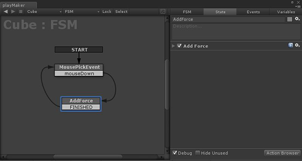
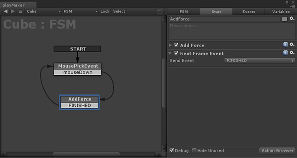

Overview
All transitions between States are triggered by Events.
Use the Event Manager to add/edit Events.
There are 2 basic types of Events:
- System Events: Sent automatically; cannot be edited or deleted.
- User Events: Custom events that you can use however you want.
System Events
By convention, system events are capitalized.
| Event | Description | Unity Docs |
|---|---|---|
| START | Sent when the state machine is enabled. | N.A. |
| FINISHED | Sent when all actions on the active state have finished. See Actions. | N.A. |
| LEVEL LOADED | Sent after a new level is loaded. | OnLevelWasLoaded |
| BECAME VISIBLE | Sent when the game object becomes visible by any camera. | OnBecameVisible |
| BECAME INVISIBLE | Sent when the game object is no longer visible by any camera. | OnBecameInvisible |
| COLLISION ENTER | Sent when the game object first collides with another object. | OnCollisionEnter |
| COLLISION EXIT | Sent when the game object stops colliding with another object. | OnCollisionExit |
| COLLISION STAY | Sent while the game object is colliding with another object. | OnCollisionStay |
| MOUSE DOWN | Sent when the mouse clicks on the game object. | OnMouseDown |
| MOUSE DRAG | Sent while the mouse button is down and over the game object. | OnMouseDrag |
| MOUSE ENTER | Sent when the mouse rolls over the game object. | OnMouseEnter |
| MOUSE EXIT | Sent when the mouse rolls off the game object. | OnMouseExit |
| MOUSE OVER | Sent while the mouse is over the game object. | OnMouseOver |
| MOUSE UP | Sent when the mouse button is released over the game object. | OnMouseUp |
| MOUSE UP AS BUTTON | Sent when the mouse button is released over the same GUI Element or Collider it was pressed on. | OnMouseUpAsButton |
| TRIGGER ENTER | Sent when the game object enters a trigger volume. | OnTriggerEnter |
| TRIGGER EXIT | Sent when the game object exits a trigger volume. | OnTriggerExit |
| TRIGGER STAY | Sent while the game object stays inside a trigger volume. | OnTriggerStay |
| CONTROLLER COLLIDER HIT | Sent when the character controller on the game object collides with an object. | OnControllerColliderHit |
| COLLISION ENTER 2D | Sent when the game object first collides with a 2D Collider. | OnCollisionEnter2D |
| COLLISION EXIT 2D | Sent when the game object stops colliding with a 2D Collider. | OnCollisionExit2D |
| COLLISION STAY 2D | Sent while the game object is colliding with a 2D Collider. | OnCollisionStay2D |
| TRIGGER ENTER 2D | Sent when the game object enters a 2D Trigger. | OnTriggerEnter |
| TRIGGER EXIT 2D | Sent when the game object exits a 2D Trigger. | OnTriggerExit |
| TRIGGER STAY 2D | Sent while the game object stays inside a 2D Trigger. | OnTriggerStay |
Notes
- "Game object" above refers to the game object that owns the FSM.
- After a COLLISION or TRIGGER event you can use GetCollisionInfo, GetTriggerInfo, or GetControllerHitInfo to decide how to react to the collision.
- MOUSE events are very useful in state machines that control GUIText or GUITexture components. See GUI Element Actions.
User Events
Add any events you need to control the state machine in the Event Manager.
Sending Events
There are a few ways to send events to an FSM:
- Using Actions
- Using Animation Events
- Sending event from scripts.
Sending Events From Actions
The most basic Actions to send an event:
Other Actions send events based on conditions:
Events are essential to the flow of an FSM, so many actions send them.
Infinite Loops
PlayMaker follows events so you can chain together multiple states/actions in a single frame. E.g., An event can trigger a state transition; the new state can run some actions and send another event and so on... all in one update.
This is useful for doing a lot of work in a single frame, but sometimes you can accidentally create infinite loops that would crash Unity!
As a precaution, if a loop exceeds 1000 iterations PlayMaker will break out of the loop and log this error:
Loop count exceeded maximum: 1000 Default is 1000. Override in Fsm Inspector.
If it's your intention to loop more than 1000 times you can override this limit in the FSM Inspector.
However, if the loop is unintentional, you can use a Next Frame Event to break out of the infinite loop. This tells PlayMaker that you've finished work for this frame, and should continue in the next frame.
Example:
These states create an infinite loop:

Break out of the infinite loop with a Next Frame Event:

Animation Events
You can use Unity's Animation window to send events to FSMs.